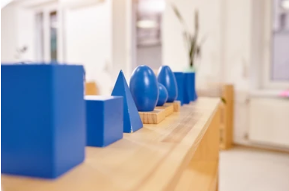
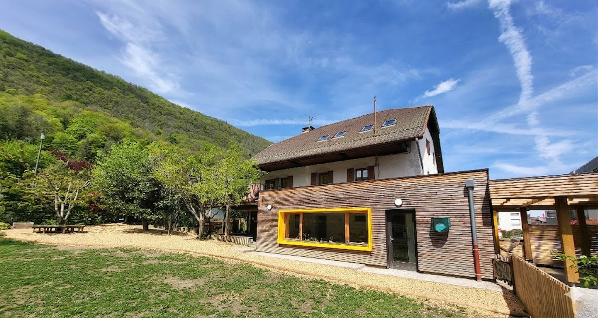
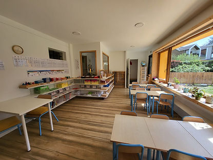

Le Projet

L’école ouvre dans un premier temps une classe élémentaire pour les
enfants de six à neuf ans, qui aura une capacité maximum de 12
élèves pour la première année.
A l’aide du matériel Montessori, les apprentissages se font par le
biais de présentations correspondant aux intérets des enfants dans
tous les domaines: langage (français et anglais), mathématiques,
histoire, géographie, biologie, musique et art. Ils sont ensuite
invités à explorer le matériel en autonomie et réinvestir les
concepts à leur initiative.
La tranche d'âge de la classe primaire pourra s'élargir avec le
temps pour accompagner les enfants jusqu'à la fin du primaire et
l'ouverture d'une classe pour les enfants de trois à six ans et
prévue pour la rentrée 2027.
Le lieu

Nos locaux se situent à Sevrier, entre le lac et la montagne. Les
enfants sont accueillis dans une salle de classe moderne et
lumineuse, équipée de matériel Montessori, et un jardin de 400m2.
La proximité avec la nature permet à la classe de faire une sortie
en forêt hebdomadaire et d'observer et les différents éco-systèmes
environnants.
La salle de classe, équipée du matériel Montessori, donne sur le
jardin. Le matériel est introduit aux enfants par le biais de
présentations et ceux-ci peuvent à leur tour explorer et poursuivre
le travail en autonomie.
Tous les domaines de l'enseignement primaire sont présents dans la
classe et sont abordés par le biais du matériel.
Les enfants y trouvent tout ce dont ils ont besoin pour faire de la
recherche, explorer le monde, organiser leur connaissances et
exprimer leur créativité.
